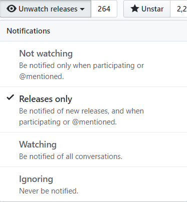

Is
Cataclysm DDA
0.D released yet?
Lemme check for you...
Hold on, there's more...
commits to
master
since 0.C
Notify me maybe?

GitHub now allows to subscribe to releases only
Oh gosh, is this a thing already?